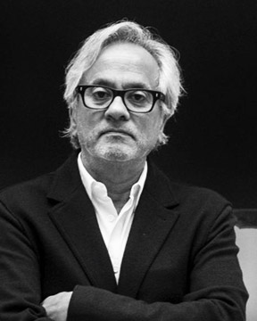

아트가든은 파라다이스 시티의 메인 호텔과 플라자 광장 사이에 위치한 정원공간이다.
다양하고 스펙타클한 아트테인먼트가 펼쳐지는 시설들을 체험하는 도중 잠시 조용하고 편안한 휴식시간이 필요해진다면 바로 이곳이 안성맞춤이다. 파라다이스 워크를 따라 서로 마주보고 있는 두 개의 가든에는 인도 출신의 세계적인 두 아티스트인 Anish Kapoor와 Subodh Gupta의 시그니쳐 조각설치작품이 멋진 앙상블을 이루고있다. 정원의
풍경과 방문자의 모습을을 고요히 투영해내는 두 작품을 바라보며 여유와 사색의 시간을 향유할 수 있다.
C-Curve
화려하고 우아한 베르사유 궁전에 파격을 불어넣은 작품으로 유명세를 탄 이 작품은 제목에서 보이듯 작가 개인의 경험이나 기존에 존재하는 의미적 서술에 기대지 않고 있는 그대로의 모습을 비추는 거울처럼 중립적이고 탈내러티브한 경향을 보여주고 있다. 정원이라는 명상적이고 사색적인 특성을 가지는 공간 가운데 위치한 이 작품을 통해 이곳을 방문하는 관객들은 작품속에 투영되는 자신들을 포함한 다양한 이미지들을 관조하며 스스로에
대해 성찰하고 사유할 수 있는 기회를 제공받는다.

The Artist Anish Kapoor뭄바이 출생의 작가는 이른바 '현대의 숭고'를 가장 잘 보여주는 예술가로 꼽힌다. 1980년대 대리석, 회반죽 등의 소재로 만든 밝은 단색의 작품 시리즈인 '피그먼트(Pigment)' 작업으로 알려지기 시작한 작가는 90년대 후반부터 고도로 반사되는 스테인리스 스틸의 표면을 활용한 작업을 시작하였다.
정밀하게 다듬어져 주변의 이미지를 거울처럼 극적으로 반사하는 작가의 작품은, 표면에 반사되는 빛의 흐름과 관객의 움직임에 의해 시시각각 변화한다.
즉 겉으로 보기에는 텅 빈 공간이자 단순한 용기인 거울 속 공간은 반사를 통해 모든 공간이 될 수 있으면서도 스테인레스 스틸 표면이라는 물 성만을 보자면 공간으로 볼 수 없기도 한 것이다.
작가는 바로 이 지점을 물질과 비물질이 만나는 점점으로
포착하여 물성이 갖는 특성을 통해 비현실적이고 정신적인 차원을 창출해 내고자 한다.
더보기
Ray
화려하고 우아한 베르사유 궁전에 파격을 불어넣은 작품으로 유명세를 탄 이 작품은 제목에서 보이듯 작가 개인의 경험이나 기존에 존재하는 의미적 서술에 기대지 않고 있는 그대로의 모습을 비추는 거울처럼 중립적이고 탈내러티브한 경향을 보여주고 있다. 정원이라는 명상적이고 사색적인 특성을 가지는 공간 가운데 위치한 이 작품을 통해 이곳을 방문하는 관객들은 작품속에 투영되는 자신들을 포함한 다양한 이미지들을 관조하며 스스로에
대해 성찰하고 사유할 수 있는 기회를 제공받는다.
The Artist Subodh Gupta인도 바하르 주 출생으로 파트나 미술 대학에서 회화를 전공하고 뉴델리에서 거주하면서 작업을 하고 있다. 그의 작품들은 수 많은 주요 국제 비엔날레에서 주목받아 왔으며, 아시아, 유럽, 미국 등지에서 다수의 개인전을 가졌다. 굽타는 인도성을 상징하는 이미지, 레디메이드 오브제들을 사용하여 드라마틱한
기념비적 조각들을 만들어 인도의 삶과 문화, 모순을 표출한다.
더보기
Artwork Name

화려하고 우아한 베르사유 궁전에 파격을 불어넣은 작품으로 유명세를 탄 이 작품은 제목에서 보이듯 작가 개인의 경험이나 기존에 존재하는 의미적 서술에 기대지 않고 있는 그대로의 모습을 비추는 거울처럼 중립적이고 탈내러티브한 경향을 보여주고 있다. 정원이라는 명상적이고 사색적인 특성을 가지는 공간 가운데 위치한 이 작품을 통해 이곳을 방문하는 관객들은 작품속에 투영되는 자신들을 포함한 다양한 이미지들을 관조하며 스스로에
대해 성찰하고 사유할 수 있는 기회를 제공받는다.

The Artist Artist Name인도 바하르 주 출생으로 파트나 미술 대학에서 회화를 전공하고 뉴델리에서 거주하면서 작업을 하고 있다. 그의 작품들은 수 많은 주요 국제 비엔날레에서 주목받아 왔으며, 아시아, 유럽, 미국 등지에서 다수의 개인전을 가졌다. 굽타는 인도성을 상징하는 이미지, 레디메이드 오브제들을 사용하여 드라마틱한
기념비적 조각들을 만들어 인도의 삶과 문화, 모순을 표출한다.
더보기